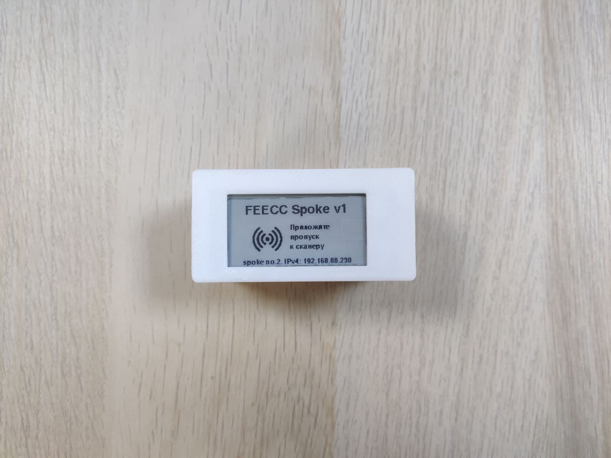
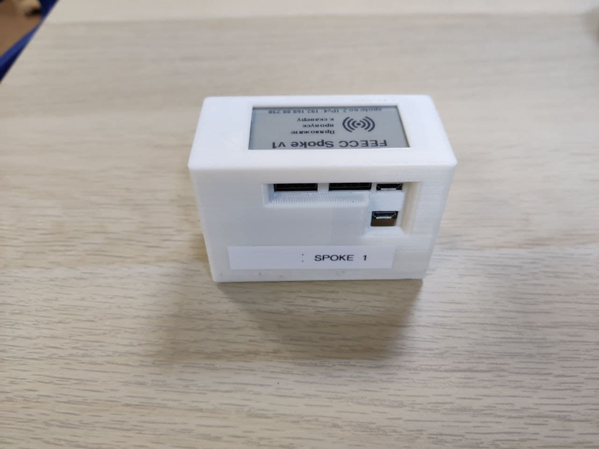

Spoke
Daemon of the Spoke device of the Feecc QA system. With headless compatibility (automatic fallback).
Сборка Spoke
Для сборки вам понадобится:
- Raspberry Pi Zero W
- RFID Reader
- Barcode Reader (поддерживающий EAN13, будет достаточно даже 1D)
- MicroSD-Карта (Рекомендуется 10 class) от 16 ГБ
- 2.13inch e-Paper HAT (обязательно жёлто-черная)
- USB HUB HAT
- PCB Receptacle ("гребенка")
- PCB Receptacle ("угловая гребенка, тип 1")
- Корпус (опционально)
Пример собранного Spoke
 
Корпус Spoke (Опционально)
Файлы для печати на 3D принтере: тык
Для сборки Spoke в корпус понадобятся 2 магнита и 4 болта (M3X12)
Установка ПО для Spoke
Установка Raspbian
- Загрузить Raspberry Pi Imager
- Записать на MicroSD-карту Raspberry Pi OS Lite
- Заново вставить MicroSD-карту и в корне создать файл ssh для доступа по SSH
- Для включения WIFI нужно создать файл wpa_supplicant.conf со следующим содержимым:
ctrl_interface=DIR=/var/run/wpa_supplicant GROUP=netdev
update_config=1
country=RU
network={
ssid="SSID вашей сети"
psk="Пароль вашей сети"
}
- Установите MicroSD-карту в Raspberry Pi Zero W и включите устройство, далее подключитесь по ssh к Pi (пароль по умолчанию
raspberry)
$ ssh pi@<ip вашего устройства>
- Измените hostname устройства
$ sudo hostnamectl set-hostname feecc000003
- Склонируйте репозиторий
$ git clone https://github.com/NETMVAS/feecc-spoke-daemon
- Перейдите в директорию
$ cd feecc-spoke-daemon
- Установите Poetry
$ curl -sSL https://raw.githubusercontent.com/python-poetry/poetry/master/get-poetry.py | python3 -
- Обновите систему и установите необходимые зависимости для сборки пакетов
$ sudo apt install tree python3-dev python3-distutils libjpeg-dev git vim python3-pip -y
- Установим все необходимые зависимости для запуска проекта
$ poetry install --nodev && poetry shell
- Измените конфигурацию Spoke которая находится в файле
config.yaml - Установите Feecc Spoke Daemon
$ python3 install.py
- Активируйте SPI-интерфейс
- Установите EventToInternet
$ cd ~ && git clone https://github.com/NETMVAS/feecc-hid-reader-daemon && cd feecc-hid-reader-daemon && bash install.sh $$ cd ..
- Перезагрузите устройство
- Подключите RFID и Barcode ридеры